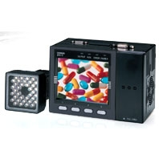

The Omron's new ZFX-C Smart Vision Sensor is a total Image Processing system that includes everything from a camera with an integrated light source to an image-processing unit.
Building Automation
Industrial Automation
Power Automation & Safety


Bangladesh Distributor
ZFX
Smart Sensor (Vision sensor with built-in LCD monitor)

Essential Innovation for Future Generations
about this Product Family
Related Contents
- Sensors
- Vision Sensors / Machine Vision Systems
- Features
- Lineup
- Specifications
- Dimensions
- Application
- Catalog
last update: October 15, 2012
Easy Vision Being Our Vision
With Omron's newly developed proprietary measurement algorithm, the parameter can be set through only a few steps involving the operation of a touch-panel color monitor.
This "Smart" user interface provides simplicity of usage giving anyone all they can need to perform a complete image enhancement.
The new technology and style of the ZFX-C paves the way to a new era of vision sensors.
"Smart Recipe" with condensed know-how (World's first)
Capturing the image processing know-how Omron has accumulated over many years, the world's first "Smart Recipe" has radically reduced setting up time allowing for greater productivity.
One-touch automatic setting
The essential skills for image processing are now packaged into Omron's unique algorithm. The setting that traditionally required much fumbling is now made easy with the "select from auto listed options" using recipes. Lighting setup, the longtime problem for image processing, and the tricky parameter details involved in measurement setup, can now be done automatically with just the flip of a switch.
Smart Recipe
Smart Recipe is on Omron's invention of 3-step setting procedure.
By adopting a new algorithm to encapsulate "human know-how", the auto setup for lighting and measurement now possible.
Anyone can rapidly perform a high level of image processing.
Step1: Choose best lighting (Patent pending)
The know-how and trial and error that have been indispensable and required much time and effort up to now in lighting setup is now an automated process. By just selecting the best one from the candidate images automatically captured by changing the lighting pattern with the auto-lighting, anyone can easily find the optimal lighting. User can now easily determine settings for shiny work with high degrees of reflection and black monochrome work with low degrees of reflection, something very tricky before. In addition, when a more detailed setup is needed, the customized setup can be used to incorporate know-how.
Built-in lighting camera that enables an advanced automatic lighting
The Built-in lighting camera and improved controller brings about an even higher degree of automatic lighting. With this camera you can produce up to a maximum of 1296 patterns of reflective lighting making the chore of choosing lighting equipment unnecessary. The lighting setup can be managed as digital data so it is possible to store the optimal setup for each job, and it smoothly handles the changing of settings. It is also possible to fine-tune the customized setup can be added.
Step2: Choose measurement icon
The measurement method can be specified by just choosing the icon from out of a total of 9 measurement items for different types of inspection.
Step3: Draw region, press and go
Just specify the region of interest and press Auto key and the system will determine the most suitable parameters for the target image.
Now anyone can easily perform a complex and advanced parameter setting which used to require special knowledge and cumbersome steps.
Customized setting is also possible by fine tuning the parameters automatically set up. The time required to set up parameters can be significantly reduced.
3-step position correction
Even when the position of work changes due to the conveyer condition, the excellent position correction function can come into play allowing adjustment using the work contours, two stage position correction and so on. With the auto setup, position difference can be easily adjusted to enable stable measurement.
Tailored Measurement item
Including two shape measurement items, the system contains 5 categories and 9 types of Shape, Size, Edge, Bright and Hue, Application measurement items.
It responds to the variety of inspection requirements in the manufacturing sites.
Pattern search (Fastest in the industry)
The shape measurement is a fundamental algorithm for image processing. By adopting a new image processor, the pattern search achieves a balance in the three factors of speed, precision and stabilization, something that was an arduous task until now. It now supports a 360-degree revolving search and a sub-pixel processing of 1000 to 1 pixel units as well as a multi area searcher. The robust pattern search can respond to the multitude of inspects and measurements of any application.
Sensitive search
When it comes to the difficult processing of detecting small differences, the Omron's unique sensitive search matches work at a smallest detail and in doing so makes such detection all the more possible.It resists variations in position and density to capture even the smallest detail in the complex patterns.

Defect
It is used to detect smears, scratches, chipping and burrs on the work. Defects are displayed on the screen, which makes it ideal tool for visual inspection.
Region
Detects the existence of work within a region and measures its size based on the area to perform various classification.
Hue
The three factors in color, i.e. hue, saturation and brightness value, are measured and digitalized. And whilst an accurate differentiation of the color is performed, it is also possible to measure the color variety with the deviation measurement function (with color camera connected).

Bright
Measures the brightness within a region. It can be used for checking the presense of a component, etc., by generating average density and density deviation values.
Position
The existence or not and the position of the edge is measured. Oblique edges can now be measured even in complex conditions and even more accurate position measurements can be taken. The peak bottom measurement function that can accurately capture the edges is now supported.
Width
The width of the edge is measured. By using the edge partitioning method, it is possible to measure the maximum and minimum width.
Count
The number of edges inside the area is counted. Based on the number of edges on the pre-registered good model, it counts the edges in the area and determines the correctness.
Visualized Controller
Smallest in class controller build in embedded LCD saves space and time.
Visualized setting and monitoring (Smallest in class)
Despite its small form factor, the enlarged screen significantly improves the visibility and the ease of operation. The method of operation can be selected from 3way - the touch pen, key pad or console.
Intensive camera solutions
8 types of cameras that can be selected for different types of work to achieve optimal measurement.
Built-in lighting camera
Triple-speed camera (IP65)
Line up of 6 types of built-in lighting cameras that do not need lighting selection or setup. The color camera can respond to a wide range of work with a 5-150mm field of view. Through image compression and partial capturing, it can support a high-speed line.
C-mount camera unit
Triple-speed camera
This product line includes C-mount camera that can select the lens to match the field. It can be used in combination with optional lighting such as transmitted lighting, low angle lighting and bar lighting, etc. to support different inspection types.
Innovative triple-speed camera
(Fastest in the industry)
Performs fast transfer of 11.1ms that are 3 times faster than standard cameras and 1.5 times faster than high-speed cameras while maintaining a resolution of the whole screen. In addition, a super speed, minimum 3.2ms transfer is possible with image compressions and partial capturing.
Excellent ease of use
Flexible installation
Flexible installation supported for different mounting site conditions. It can be mounted on DIN rail as well as on the control panel surface. (Optional panel mount adapter available.)
Hybrid interface
A new interface that supports both parallel I/O and terminal platform to dramatically improve the ease of wiring.

last update: October 15, 2012